01The idea
Linear spectral mixture analysis (Adams et al. 1995) takes a pixel's reflectance in each band as the sum of the endmembers' reflectances, each weighted by the share of the pixel it covers. With a few endmembers and more bands than endmembers, the shares, or fractions, are what best rebuilds the pixel's spectrum. In the Amazon, the fractions of green vegetation, soil, dead vegetation and shade show logging and fire damage that a vegetation index misses (Souza et al. 2005).
- Endmember
- The spectrum of one pure material: dense vegetation, bare soil, water, shade. Here, a pin's bands on a place known to be that material.
- Fraction
- The share of an endmember in a pixel, from 0 to 1 with the default constraints.
- FCLS
- Fully constrained least squares (Heinz & Chang 2001): the fractions are not negative and add up to one. Each pixel is solved exactly.
- RMSE
- The root mean square difference between the pixel's spectrum and the one the fractions rebuild, in reflectance. High where the endmembers do not describe the pixel.
02Two tools
| Tool | Series | Endmembers | Outputs |
|---|---|---|---|
| Spectral unmixing (endmembers) | A multiband file per date (Landsat, Sentinel-2): every band of each date is read. | A pin's bands at the date shown. | A series of each fraction, their means over the dates, the mean RMSE and the number of observations unmixed. |
| Spectral unmixing (spectrum) | A hyperspectral scene, one band per wavelength (EnMAP, PRISMA, EMIT, AVIRIS). | A pin's spectrum. | A map of each fraction and the RMSE. |
Both are under Tools → Indices, both run Zeit's unmix, and both are fitted live on the chart before they run on the image.
03The example
125 Landsat 8/9 dates of central Rondônia, Brazil, from February 2020 to August 2026: 1690 × 1675 pixels of 30 m, a GeoTIFF per date with the six reflectance bands (blue, green, red, NIR, SWIR1, SWIR2), clouds, shadows and snow already set to no data from the QA_PIXEL band. The scale and offset of Collection 2 (0.0000275 and −0.2) are in the files, so Janus reads reflectance.
The quality band
The tool reads every band of each date but the quality band. When the files carry one (QA_PIXEL, Fmask, SCL), choose it as the Quality band in the Display panel, with its rule: it masks the clouds and shadows of each date, which are then left out of the unmixing, and it is not unmixed itself. Here the files hold the six reflectances only, already masked.
04Endmembers from pins
Tools → Spectral unmixing (endmembers). Go to a clear date (here the last, 23 August 2026, in the dry season) and drop pins on pure covers: a dense forest, a field cleared to bare soil, open water. Add one from 2026-08-23... adds a pin's six bands at that date as an endmember; name each in its box.

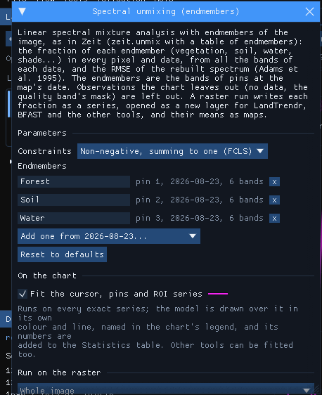
Pick endmembers where the cover is pure over several pixels, and in the date you take them from: the soil pin here is a field cleared between 2020 and 2026, bare in August 2026 but forest in 2020. Two to six endmembers is usual; without the sum-to-one constraint, at most one fewer than the bands. Too many similar endmembers make the fractions unstable: the solver can trade one for the other at little cost.
05On the chart
With Fit the cursor, pins and ROI series ticked, every observation of the series under the cursor or a pin is unmixed and the fractions are drawn over its chart, when the chart shows an index (values in −1 to 1). Here the Display panel shows the NDVI: Shown band NIR, Normalized difference with B red, and Apply. A pin on a forest cleared during the series:

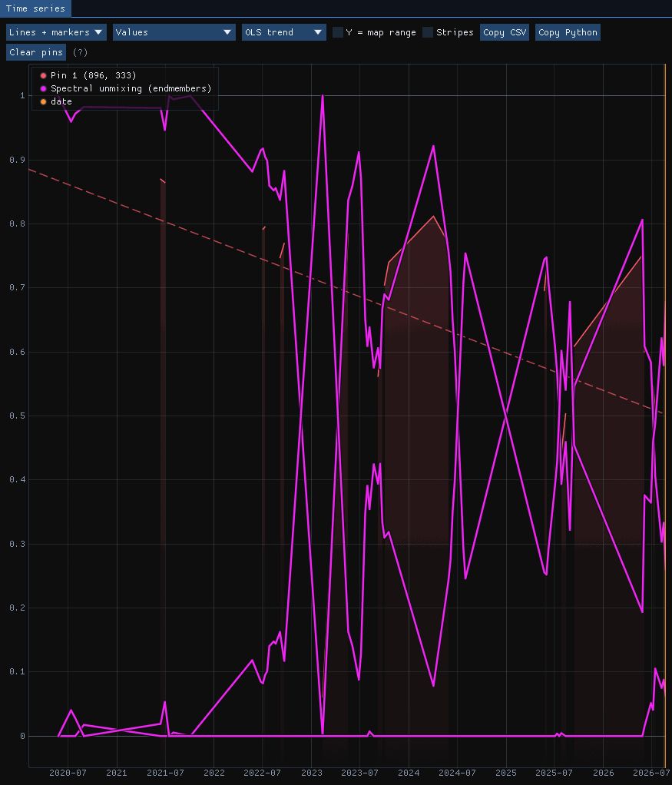

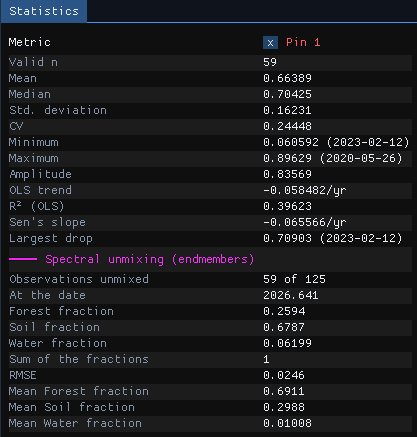
59 of the 125 dates have a clear observation at this pixel. Until 2022 the forest fraction stays near 1; it falls through 2022 and drops to 0 in early 2023, when the soil fraction takes its place. From then on the two swing against each other with the seasons: a green pasture in the rainy season looks like the forest endmember to a model of three, and a dry one like soil. On 23 August 2026 the pixel is 26% forest, 68% soil and 6% water, rebuilt with an RMSE of 0.025 reflectance.
The three fractions are drawn in the tool's colour; the Statistics table names them and gives the values at the observation nearest the date shown (At the date), their sum and the means over all the observations.
A missing endmember
The swing of the pasture is the model's limit, not noise: dry grass is neither forest nor bare soil. An endmember of dry vegetation (non-photosynthetic vegetation), taken from a pasture in the dry season, would take that share and lower the RMSE there.
06Running it on the series
Under Run on the raster, Whole image and Run: the 2.8 million pixels × 125 dates took 130 seconds. The run writes each fraction as a series, a GeoTIFF of one band per date (Int16, scale 0.0001), opened as a new layer that any other tool can take, and four maps listed under the series:

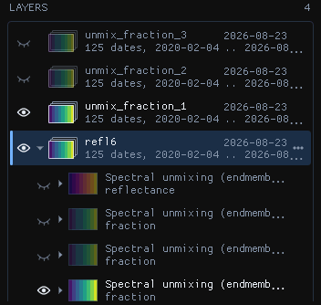
| Output | What it holds |
|---|---|
| Fraction series | Each endmember's fraction at each date (no data where the date had none). |
| Mean fraction | Each endmember's mean over the dates. |
| Mean RMSE | The mean error of the rebuilt spectra. |
| Observations unmixed | How many dates each pixel had. |

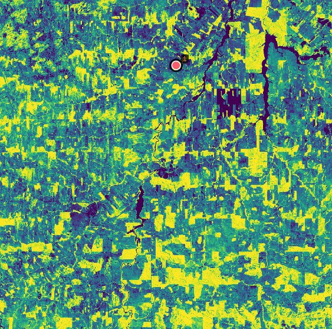

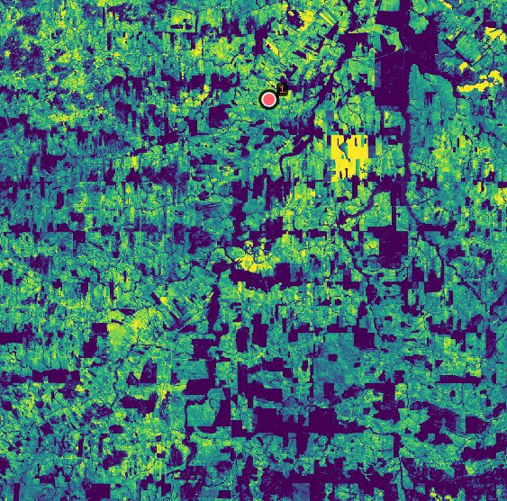

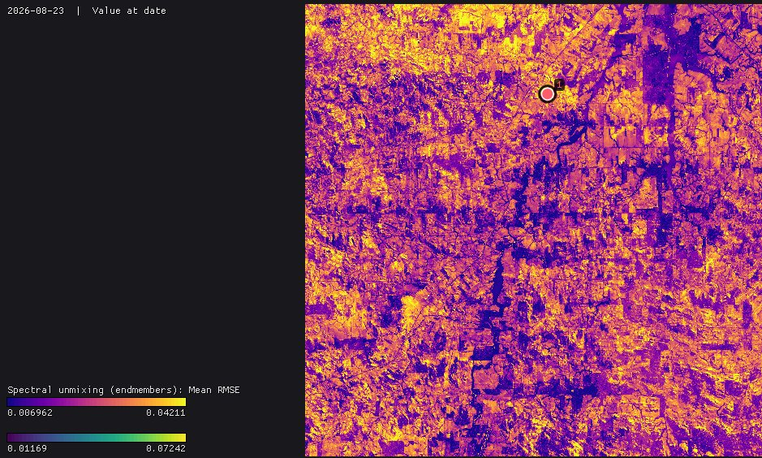
The fraction series are series like any other: open LandTrendr or BFAST on the forest fraction to date the clearings, or the soil fraction to find when fields were bare. They are large (a few hundred MB each here): run on the Visible area or an ROI while choosing the endmembers.
07The constraints
| Constraints | Fractions | When |
|---|---|---|
| Non-negative, summing to one (FCLS) | 0 to 1, adding up to 1 | The default: shares of the pixel. |
| Non-negative (NNLS) | 0 or more, any sum | When brightness varies (illumination, slopes) and the sum should follow it. |
| Summing to one | Any sign, adding up to 1 | To see where the endmembers fail: negative fractions and fractions above 1 point at materials not in the list. |
| None (least squares) | Any | The plain linear model, for comparison. |
Without the constraints the fractions can be negative or above one where the endmembers do not describe the pixel; the RMSE shows where.
08A hyperspectral scene
An EnMAP scene (L2A, surface reflectance) of 10 August 2022 on the coast of Groningen, the Netherlands: 1335 × 1288 pixels of 30 m, 224 bands from 418 to 2446 nm. Janus opens the file as it is, as a spectrum, a series whose axis is the wavelength, and the chart draws each pixel's spectrum. Tools → Spectral unmixing (spectrum) takes pins' spectra as endmembers, the same way: here a green crop (vegetation), a bare field (soil) and the Wadden Sea (water).
Bands without data
EnMAP's L2A product leaves six bands, 1331 to 1391 nm in the water vapour absorption, without data in every pixel. The endmembers have no value there either, and the tool leaves those bands out on its own: the pixels are unmixed on the other 218, and the rebuilt spectrum breaks at the gap. Nothing to prepare.

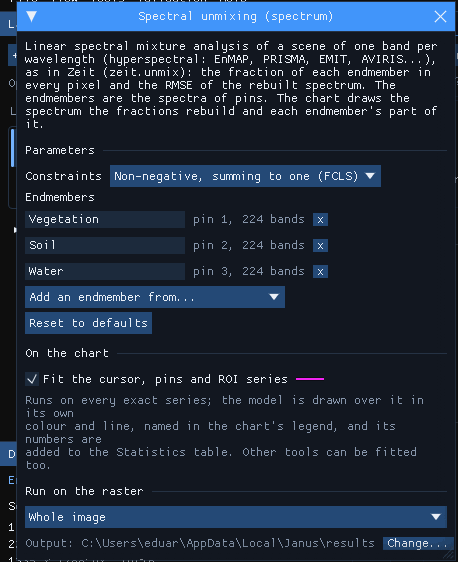

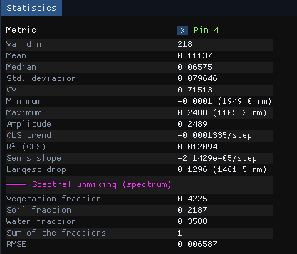

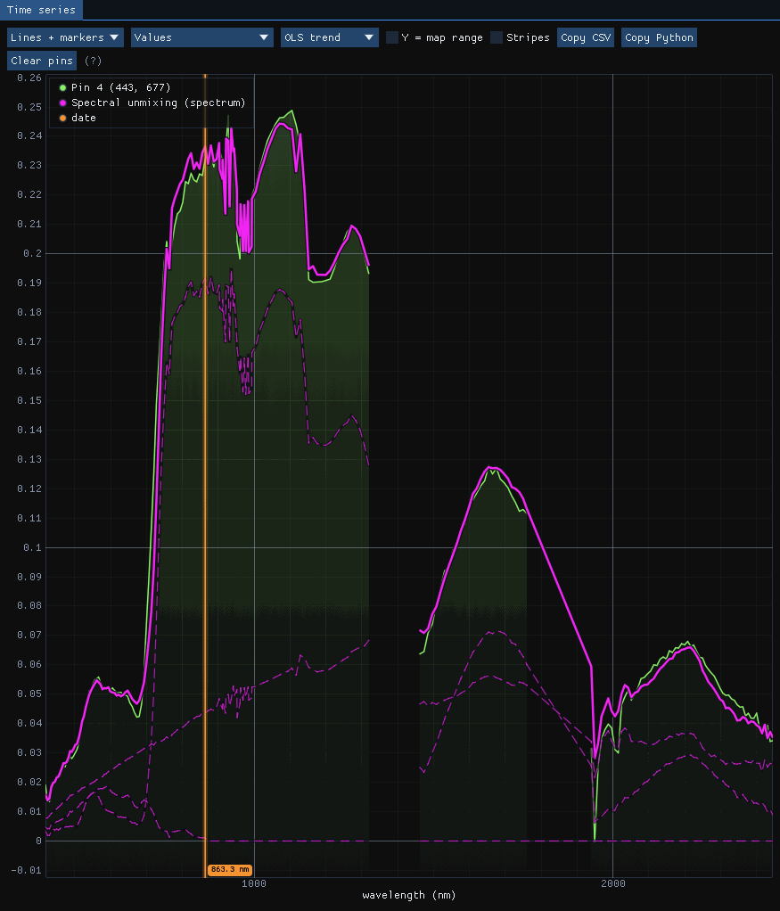
The rebuilt spectrum follows the pixel's over the whole range, with an RMSE of 0.0066 reflectance. The water endmember is nearly black beyond the visible, so on land it acts as shade: it takes the darkness of the pixel (wet soil, shadows, ditches) rather than standing water. Name it so when reading the maps.
Run on the whole scene, the tool took 9 seconds for its 1.7 million pixels of 218 bands. Each fraction and the RMSE are maps under the scene in the Layers panel:

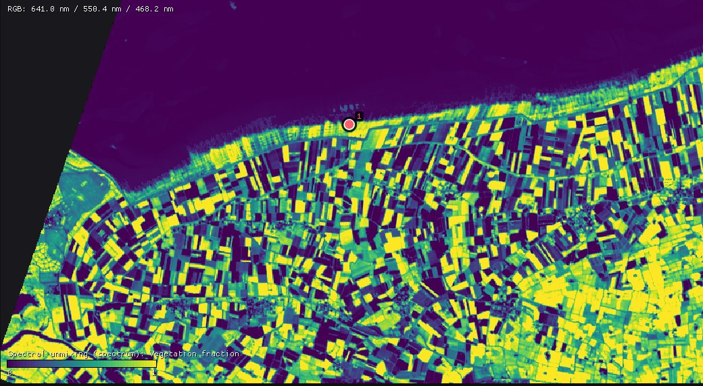

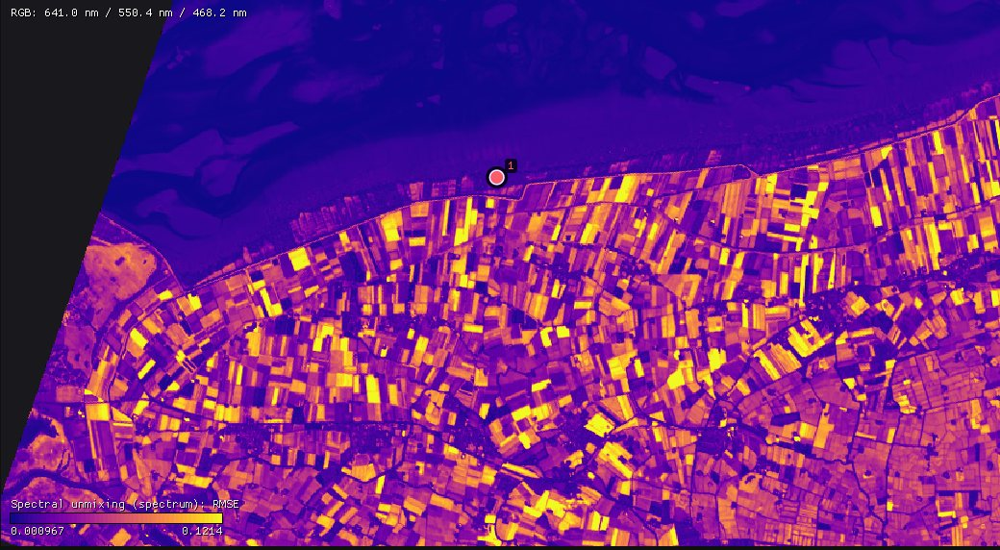
09Against RStoolbox
Zeit's solver against mesma of the R package RStoolbox, with its NNLS solver, on pixels mixed from 4 endmembers in 6 bands (Zeit's own benchmark, benchmarks/vs_originals/unmix.py):
| Pixels | RStoolbox | Zeit, 1 thread | Zeit, 19 threads | Agreement |
|---|---|---|---|---|
| 200 × 200 | 0.84 s | 47 ms (18×) | 5.4 ms (157×) | fractions to 4e-4 |
| 1000 × 1000 | 21.8 s | 1.25 s (17×) | 132 ms (165×) | fractions to 4e-4 |
mesma's NNLS stops at a tolerance, while Zeit solves each pixel exactly: the fractions agree to 4e-4 and Zeit's RMSE is never larger.
10What next
- Date the change: LandTrendr or BFAST on a fraction series.
- Forest degradation: Tools → NDFI (spectral unmixing) unmixes Landsat with the fixed endmembers of Souza et al. (GV, NPV, soil, shade, cloud) into the NDFI, the index CODED uses for logging and fire.
- Validate it: classify the fractions and check the map with the Validation guide.
- Script it: the same unmixing is
zeit.unmixin Python.
11References
- Adams, J. B., Sabol, D. E., Kapos, V., Almeida Filho, R., Roberts, D. A., Smith, M. O., Gillespie, A. R. (1995). Classification of multispectral images based on fractions of endmembers: application to land-cover change in the Brazilian Amazon. Remote Sensing of Environment, 52(2), 137–154.
- Heinz, D. C., Chang, C.-I. (2001). Fully constrained least squares linear spectral mixture analysis method for material quantification in hyperspectral imagery. IEEE Transactions on Geoscience and Remote Sensing, 39(3), 529–545.
- Souza, C. M., Roberts, D. A., Cochrane, M. A. (2005). Combining spectral and spatial information to map canopy damage from selective logging and forest fires. Remote Sensing of Environment, 98(2–3), 329–343.
- Guanter, L., et al. (2015). The EnMAP spaceborne imaging spectroscopy mission for Earth observation. Remote Sensing, 7(7), 8830–8857.
- Leutner, B., Horning, N., Schwalb-Willmann, J. RStoolbox: remote sensing data analysis in R.
- Zeit: the library behind the tools of Janus.